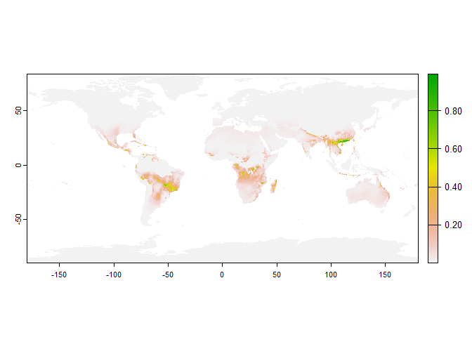

The goal of nicher is to create ecological niche models based on an ellipse model
Installation
You can install the development version of nicher from GitHub with:
# install.packages("devtools")
devtools::install_github("alrobles/nicher")Example
First we get the shapefile of an accesibility area (M):
library(nicher)
library(terra)
#> Warning: package 'terra' was built under R version 4.2.3
#> terra 1.7.39
M_path <- system.file("extdata", "Mshp_test.rds", package="nicher")
Mshp <- terra::unwrap(readr::read_rds(M_path))
plot(Mshp)
Then we get environmental variables to model:
stack_path <- system.file("extdata", "stack_1_12_crop.rds", package="nicher")
# 2 variables
stack_1_12 <- terra::unwrap(readr::read_rds(stack_path))
plot(stack_1_12)
# 3 variables
stack_1_12_19 <- get_example_data("stack_1_12_19")
plot(stack_1_12_19)We get the parameters of the ellipse:
pars_2var <- get_ENM_par(rawSpOccPnts, stack_1_12, Mshp, method = "mahalanobis")
pars_3var <- get_ENM_par(rawSpOccPnts, stack_1_12_19, Mshp, method = "mahalanobis")Then we plot the ellipse (2 vars case): 
Then we plot the ellipse (3 vars case): 
We predict the suitability given environmental data (2 vars case):
Finally we predict the suitability given environmental data (3 vars case All world): 